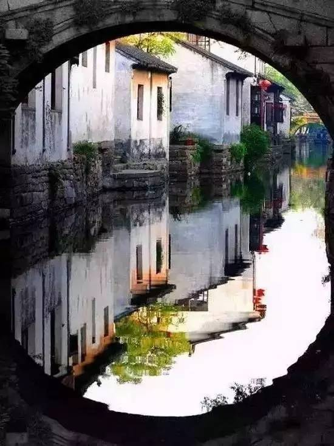
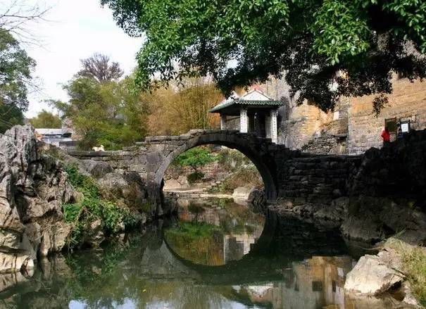
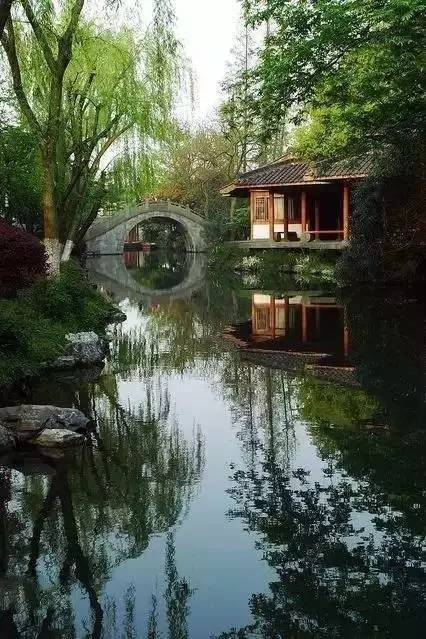
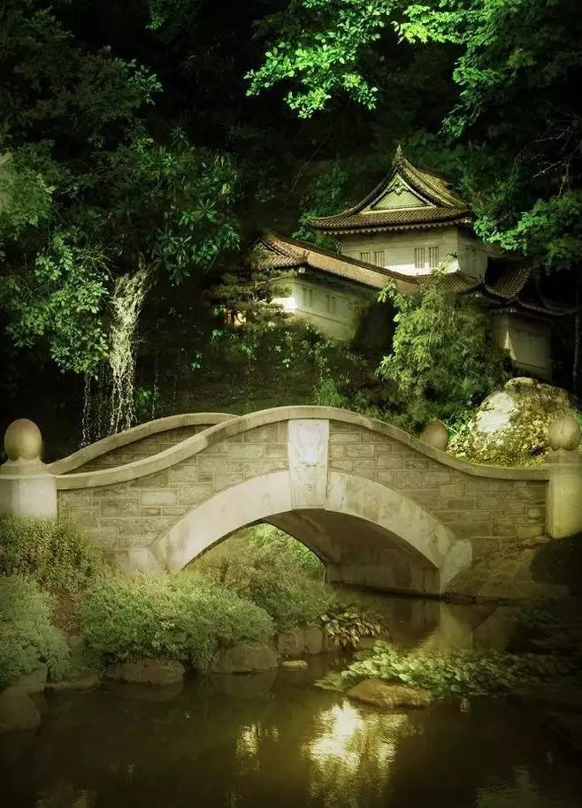
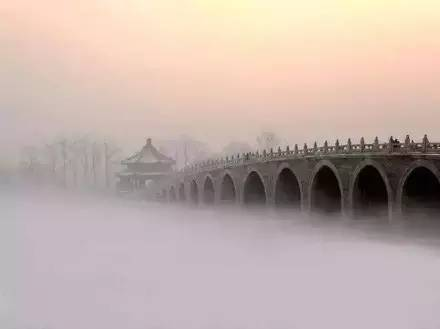
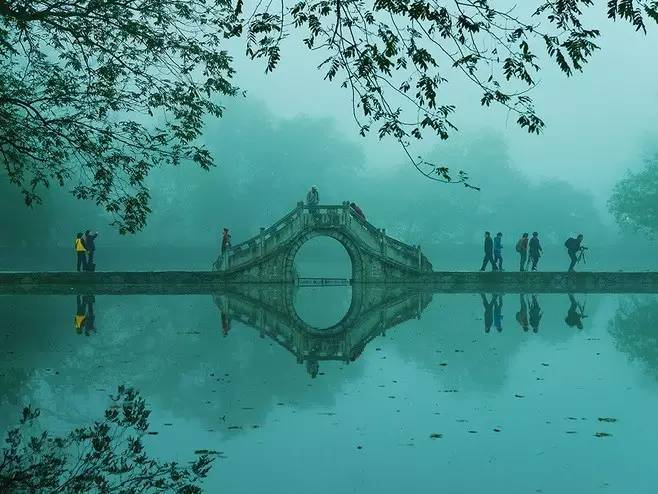

古桥与其它建筑的完美结合艺术观赏
亭台楼阁，小桥流水，互相映衬，缺一不可，桥在中国园林中扮演者重要角色。江南人家靠水而居，这一座座小桥连接着邻里之间的情谊。
桥与园林



江南人家靠水而居，这一座座小桥连接着邻里之间的情谊。
桥与山水

有山有水必有桥，桥在这样的天然图画中，与山呼应，与水衔接，薄雾中的桥在这远山近水的映衬下更显神秘
桥与文艺


桥在水上山间，凌空越阻，千姿百态，历来是文学和艺术中的觉好题材，著名的如苏州的枫桥，除张继的枫桥夜泊外，欧阳修也颂“波光柳色碧溟，曲渚斜桥画舸通”杜甫诗“市桥官柳细，江路野梅香”，白居易言“晴空桥影出，秋雁橹声来。”还有杜牧的“长洲茂苑草萧萧，暮烟秋雨过枫桥。山光水色与桥共同构成的美景融化在了在诗人眼里。萦绕在了画家的纸笔之间。